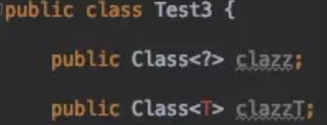

Java 泛型（generics）是 JDK 5 中引入的一个新特性, 泛型提供了编译时类型安全检测机制，该机制允许开发者在编译时检测到非法的类型。
泛型的本质是参数化类型，也就是说所操作的数据类型被指定为一个参数
泛型带来的好处
在没有泛型的情况的下，通过对类型 Object 的引用来实现参数的“任意化”，“任意化”带来的缺点是要做显式的强制类型转换，而这种转换是要求开发者对实际参数类型可以预知的情况下进行的。对于强制类型转换错误的情况，编译器可能不提示错误，在运行的时候才出现异常，这是本身就是一个安全隐患。
那么泛型的好处就是在编译的时候能够检查类型安全，并且所有的强制转换都是自动和隐式的。
|
|
上面这段代码中的 specifyType 方法中 省去了强制转换，可以在编译时候检查类型安全，可以用在类，方法，接口上
泛型中通配符
我们在定义泛型类，泛型方法，泛型接口的时候经常会碰见很多不同的通配符，比如 T，E，K，V 等等，这些通配符又都是什么意思呢？
常用的 T，E，K，V，？
本质上这些个都是通配符，没啥区别，只不过是编码时的一种约定俗成的东西。比如上述代码中的 T ，我们可以换成 A-Z 之间的任何一个 字母都可以，并不会影响程序的正常运行，但是如果换成其他的字母代替 T ，在可读性上可能会弱一些。通常情况下，T，E，K，V，？是这样约定的：
- ？表示不确定的 java 类型
- T (type) 表示具体的一个java类型
- K V (key value) 分别代表java键值中的Key Value
- E (element) 代表Element
？无界通配符
先从一个小例子看起，原文在 这里 [https://codeday.me/bug/20180113/116421.html]。
我有一个父类 Animal 和几个子类，如狗、猫等，现在我需要一个动物的列表，我的第一个想法是像这样的：
但是老板的想法确实这样的：
为什么要使用通配符而不是简单的泛型呢？通配符其实在声明局部变量时是没有什么意义的，但是当你为一个方法声明一个参数时，它是非常重要的
当调用 countLegs1 时，就会飘红，提示的错误信息如下：
所以，对于不确定或者不关心实际要操作的类型，可以使用无限制通配符（尖括号里一个问号，即 <?> ），表示可以持有任何类型。像 countLegs 方法中，限定了上届，但是不关心具体类型是什么，所以对于传入的 Animal 的所有子类都可以支持，并且不会报错。而 countLegs1 就不行。
上界通配符 <? extends E>
上届：用 extends 关键字声明，表示参数化的类型可能是所指定的类型，或者是此类型的子类。
在类型参数中使用 extends 表示这个泛型中的参数必须是 E 或者 E 的子类，这样有两个好处：
- 如果传入的类型不是 E 或者 E 的子类，编译不成功
- 泛型中可以使用 E 的方法，要不然还得强转成 E 才能使用
|
|
类型参数列表中如果有多个类型参数上限，用逗号分开
下界通配符 <? super E>
下界: 用 super 进行声明，表示参数化的类型可能是所指定的类型，或者是此类型的父类型，直至 Object
在类型参数中使用 super 表示这个泛型中的参数必须是 E 或者 E 的父类
|
|
dst 类型 “大于等于” src 的类型，这里的“大于等于”是指 dst 表示的范围比 src 要大，因此装得下 dst 的容器也就能装 src 。
？和 T 的区别
？和 T 都表示不确定的类型，区别在于我们可以对 T 进行操作，但是对 ？不行，比如如下这种 ：
简单总结下：
T 是一个 确定的 类型，通常用于泛型类和泛型方法的定义，？是一个 不确定 的类型，通常用于泛型方法的调用代码和形参，不能用于定义类和泛型方法。
区别1：通过 T 来 确保 泛型参数的一致性
|
|
像下面的代码中，约定的 T 是 Number 的子类才可以，但是申明时是用的 String ，所以就会飘红报错
不能保证两个 List 具有相同的元素类型的情况
|
|
上面的代码在编译器并不会报错，但是当进入到 testNon 方法内部操作时（比如赋值），对于 dest 和 src 而言，就还是需要进行类型转换。
区别2：类型参数可以多重限定而通配符不行
使用 & 符号设定多重边界（Multi Bounds)，指定泛型类型 T 必须是 MultiLimitInterfaceA 和 MultiLimitInterfaceB 的共有子类型，此时变量 t 就具有了所有限定的方法和属性。对于通配符来说，因为它不是一个确定的类型，所以不能进行多重限定。
区别3：通配符可以使用超类限定而类型参数不行
类型参数 T 只具有 一种 类型限定方式：
但是通配符 ? 可以进行 两种限定：
Class 和 Class<?> 区别
前面介绍了 ？和 T 的区别，那么对于，Class
Class
|
|
对于上述代码，在运行期，如果反射的类型不是 MultiLimit 类，那么一定会报 java.lang.ClassCastException 错误。
对于这种情况，则可以使用下面的代码来代替，使得在在编译期就能直接 检查到类型的问题：
Class
|
|
所以当不知道定声明什么类型的 Class 的时候可以定义一 个Class<?>

那如果也想 public Class
|
|